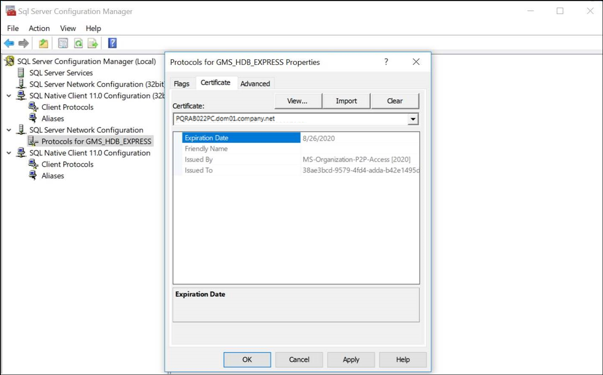

Set the Encryption in the SQL Server Configuration Manager
- In the Start menu, select Start > All Programs > Microsoft SQL Server [date] > Configuration Tools and click SQL Server Configuration Manager.
- Right-click Protocols for [SQL server name] and select Properties.
- The Protocols for [SQL server name] dialog box displays. Perform the following steps in this dialog box.
a. Click the Certificate tab and click Import: A Select Certificate dialog box displays.
b. Select a valid host certificate from the disk and click Next.
c. Enter the password for the host certificate and click Next till you reach Finish.
d. Click the Flags tab in the Protocols for [SQL server name] dialog box.
e. In the Force Encryption drop-down list, select one of the following:
- No: If the Encrypted check box in the SMC is selected, the communication will be encrypted otherwise not.
- Yes: If the Encrypted check box in the SMC is not selected, the HDB will not connect to the project and you must encrypt the communication. - Click Apply and OK.
- The encryption is set in the SQL Server Configuration Manager.
